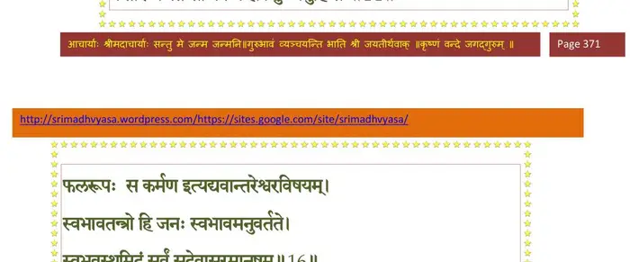
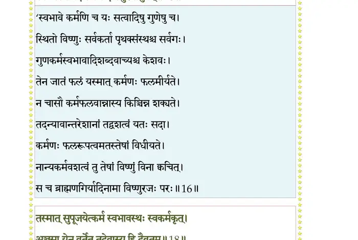
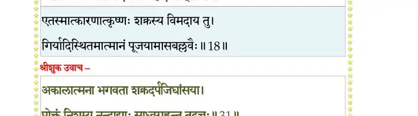
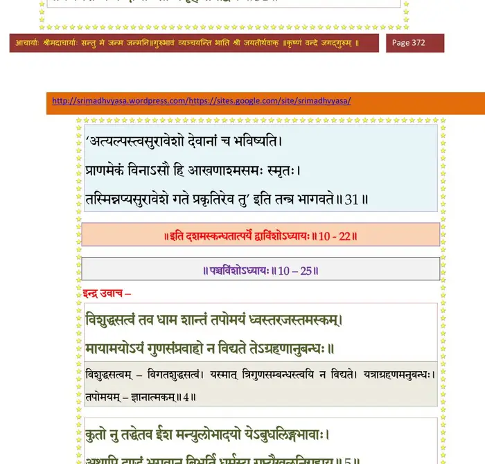

स्कन्ध 10 · अध्याय 22
श्लोक १
श्रीशुक उवाच–
भगवानपि तत्रैव बलदेवेन संयुतः ।
अपश्यन्निवसन् गोपानिन्द्रयागकृतोद्यमान्।। १ ।।
भगवानपि तत्रैव बलदेवेन संयुतः ।
अपश्यन्निवसन् गोपानिन्द्रयागकृतोद्यमान्।। १ ।।
श्लोक २
तदभिज्ञोऽपि भगवान् सर्वात्मा सर्वदर्शनः ।
प्रश्रयावनतोऽपृच्छद् वृद्धान् नन्दपुरोगमान्।। २ ।।
प्रश्रयावनतोऽपृच्छद् वृद्धान् नन्दपुरोगमान्।। २ ।।
श्लोक ३
कथ्यतां मे पितः कोऽयं सम्भ्रमो व उपागतः ।
किं फलं कस्य चोद्देशः केन वा साध्यते मखः।। ३ ।।
किं फलं कस्य चोद्देशः केन वा साध्यते मखः।। ३ ।।
श्लोक ४
एतद् ब्रूहि महान् कामो मह्यं शुश्रूषवे पितः ।
न हि गोप्यं हि साधूनां कीर्त्यं सर्वात्मना त्विह।। ४ ।।
न हि गोप्यं हि साधूनां कीर्त्यं सर्वात्मना त्विह।। ४ ।।
श्लोक ५
अस्त्यस्वपरदृष्टीनाममित्रोदासविद्विषाम् ।
उदासीनोऽरिवद् वर्ज्य आत्मवत् सुहृदुच्यते।। ५ ।।
उदासीनोऽरिवद् वर्ज्य आत्मवत् सुहृदुच्यते।। ५ ।।
श्लोक ६
ज्ञात्वाऽज्ञात्वा च कर्माणि जनोऽयमनुतिष्ठते ।
विदुषः कर्मसिद्धिः स्यात् तथा नाविदुषो भवेत्।। ६ ।।
विदुषः कर्मसिद्धिः स्यात् तथा नाविदुषो भवेत्।। ६ ।।
श्लोक ७
तत्र तावत् क्रियायोगा भवता किं विचारिताः ।
अथवा लौकिकास्तन्मे पृच्छतः साधु भण्यताम्।। ७ ।।
अथवा लौकिकास्तन्मे पृच्छतः साधु भण्यताम्।। ७ ।।
श्लोक ८
नन्द उवाच–
पर्जन्यो भगवानिन्द्रो मेघास्तस्यात्ममूर्तयः ।
अभिवर्षन्ति भूतानां प्राणनं जीवनं पयः।। ८ ।।
पर्जन्यो भगवानिन्द्रो मेघास्तस्यात्ममूर्तयः ।
अभिवर्षन्ति भूतानां प्राणनं जीवनं पयः।। ८ ।।
श्लोक ९
तत् तात वयमन्ये च वार्मुचां पतिमीश्वरम् ।
द्रव्यैस्तद्रेतसा सिद्धैर्यजन्ते क्रतुभिर्नराः।। ९ ।।
द्रव्यैस्तद्रेतसा सिद्धैर्यजन्ते क्रतुभिर्नराः।। ९ ।।
श्लोक १०
तच्छेषेणोपजीवन्ति त्रिवर्गफलहेतवे ।
पुंसां पुरुषकाराणां पर्जन्यः फलभावनः।। १० ।।
पुंसां पुरुषकाराणां पर्जन्यः फलभावनः।। १० ।।
श्लोक ११
य एवं विसृजेद् धर्मं पारम्पर्यागतं नरः ।
कामाल्लोभाद् भयाद् द्वेषात् स वै नाप्नोति शोभनम्।। ११।।
कामाल्लोभाद् भयाद् द्वेषात् स वै नाप्नोति शोभनम्।। ११।।
श्लोक १२
श्रीशुक उवाच–
वचो निशम्य नन्दस्य तथाऽन्येषां व्रजौकसाम् ।
इन्द्राय मन्युं जनयन् पितरं प्राह केशवः।। १२ ।।
वचो निशम्य नन्दस्य तथाऽन्येषां व्रजौकसाम् ।
इन्द्राय मन्युं जनयन् पितरं प्राह केशवः।। १२ ।।
श्लोक १३
श्रीभगवानुवाच–
कर्मणा जायते जन्तुः कर्मणैव प्रलीयते ।
सुखं दुःखं भयं मोक्षं कर्मणैवाभिपद्यते।। १३ ।।
कर्मणा जायते जन्तुः कर्मणैव प्रलीयते ।
सुखं दुःखं भयं मोक्षं कर्मणैवाभिपद्यते।। १३ ।।
श्लोक १४
अस्ति चेदीश्वरः कश्चित् फलरूपः स कर्मणः ।
कर्तारं भजते सोऽपि न ह्यकर्तुः प्रभुर्हि सः।। १४ ।।
कर्तारं भजते सोऽपि न ह्यकर्तुः प्रभुर्हि सः।। १४ ।।
भागवततात्पर्यनिर्णय

श्लोक १५
किमिन्द्रेणेह भूतानां स्वस्वकर्मानुवर्तिनाम् ।
अनीशेनान्यथाकर्तुं स्वभावविहितं नृणाम्।। १५ ।।
अनीशेनान्यथाकर्तुं स्वभावविहितं नृणाम्।। १५ ।।
श्लोक १६
स्वभावतन्त्रो हि जनः स्वभावमनुवर्तते ।
स्वभावस्थमिदं सर्वं सदेवासुरमानुषम्।। १६ ।।
स्वभावस्थमिदं सर्वं सदेवासुरमानुषम्।। १६ ।।
भागवततात्पर्यनिर्णय

श्लोक १७
देहानुच्चावचान् जन्तुः प्राप्योत्सृजति कर्मणा ।
शत्रुर्मित्रमुदासीनः कर्मैव गुरुरीश्वरः।। १७ ।।
शत्रुर्मित्रमुदासीनः कर्मैव गुरुरीश्वरः।। १७ ।।
श्लोक १८
तस्मात् सुपूजयेत् कर्म स्वभावस्थः स्वकर्मकृत् ।
अञ्जसा येन वर्तेत तदेवास्य हि दैवतम्।। १८ ।।
अञ्जसा येन वर्तेत तदेवास्य हि दैवतम्।। १८ ।।
भागवततात्पर्यनिर्णय

श्लोक १९
वर्तेत ब्रह्मणा विप्रो राजन्यो रक्षया भुवः ।
वैश्यस्तु वार्तया जीवेच्छूद्रस्तु द्विजसेवया।। १९ ।।
वैश्यस्तु वार्तया जीवेच्छूद्रस्तु द्विजसेवया।। १९ ।।
श्लोक २०
कृषिवाणिज्यगोरक्षाः कुसीदं तुर्यमुच्यते ।
वार्ता चतुर्विधा तत्र वयं गोवृत्तयोऽनिशम्।। २० ।।
वार्ता चतुर्विधा तत्र वयं गोवृत्तयोऽनिशम्।। २० ।।
श्लोक २१
सत्त्वं रजस्तम इति स्थित्युत्पत्त्यन्तहेतवः ।
रजसोत्पद्यते विश्वमन्योन्यं विविधं जगत् ।। २१ ।।
रजसोत्पद्यते विश्वमन्योन्यं विविधं जगत् ।। २१ ।।
श्लोक २२
रजसा चोदिता मेघा वर्षन्त्यम्बूनि सर्वतः ।
प्रजास्तैरेव सिध्द्यन्ति महेन्द्रः किं करिष्यति ।। २२ ।।
प्रजास्तैरेव सिध्द्यन्ति महेन्द्रः किं करिष्यति ।। २२ ।।
श्लोक २३
न नः पुरो जनपदा न ग्रामगृहिणो वयम् ।
वनौकसस्तात नित्यं काननाभिनिवासिनः।। २३ ।।
वनौकसस्तात नित्यं काननाभिनिवासिनः।। २३ ।।
श्लोक २४
आजीव्यैकतरं भावं यस्त्वन्यमुपधावति ।
न तस्माद् विन्दते क्षेमं जारं नार्यसती यथा ।। २४ ।।
न तस्माद् विन्दते क्षेमं जारं नार्यसती यथा ।। २४ ।।
श्लोक २५
तस्माद् गवां ब्राह्मणानामद्रेश्चारभ्यतां मखः ।
य इन्द्रयागसम्भारास्तैरयं साध्यतां मखः।। २५ ।।
य इन्द्रयागसम्भारास्तैरयं साध्यतां मखः।। २५ ।।
श्लोक २६
पच्यतां विविधाः पाकाः सूपान्धःपायसादयः ।
संयावापूपशष्कुल्यः सर्वदोहश्च गृह्यताम् ।। २६ ।।
संयावापूपशष्कुल्यः सर्वदोहश्च गृह्यताम् ।। २६ ।।
श्लोक २७
हूयन्तामग्नयः सम्यग् ब्राह्मणैर्ब्रह्मवादिभिः ।
अन्नं बहुगुणं तेभ्यो दीयतां धेनुदक्षिणाः ।। २७ ।।
अन्नं बहुगुणं तेभ्यो दीयतां धेनुदक्षिणाः ।। २७ ।।
श्लोक २८
अन्येभ्यश्चाश्वचाण्डालपतितेभ्यो यथार्हतः ।
यवसं च गवां दत्वा गिरये दीयतां बलिः।। २८ ।।
यवसं च गवां दत्वा गिरये दीयतां बलिः।। २८ ।।
श्लोक २९
स्वलङ्कृता भुक्तवन्तः स्वनुलिप्ताः सुवाससः ।
प्रदक्षिणं च कुरुत गोविप्रानलपर्वतान् ।। २९ ।।
प्रदक्षिणं च कुरुत गोविप्रानलपर्वतान् ।। २९ ।।
श्लोक ३०
एतन्मम मतं तात क्रियतां यदि रोचते ।
अयं गोब्राह्मणाद्रीणां मह्यं च दयितो मखः।। ३० ।।
अयं गोब्राह्मणाद्रीणां मह्यं च दयितो मखः।। ३० ।।
श्लोक ३१
श्रीशुक उवाच–
कालात्मना भगवता शक्रदर्पजिघांसया ।
प्रोक्तं निशम्य नन्दाद्याः साध्वगृह्णन्त तद्वचः।। ३१ ।।
कालात्मना भगवता शक्रदर्पजिघांसया ।
प्रोक्तं निशम्य नन्दाद्याः साध्वगृह्णन्त तद्वचः।। ३१ ।।
भागवततात्पर्यनिर्णय

श्लोक ३२
तथा च विदधुः सर्वे यथाऽऽह मधुसूदनः ।
वाचयित्वा स्वस्त्ययनं द्रव्यैर्गोविप्रभूभृताम्।। ३२ ।।
वाचयित्वा स्वस्त्ययनं द्रव्यैर्गोविप्रभूभृताम्।। ३२ ।।
श्लोक ३३
उपहृत्य बलीन् सर्वानादृता यवसं गवाम् ।
गोधनानि पुरस्कृत्य गिरिं चक्रुः प्रदक्षिणम्।। ३३ ।।
गोधनानि पुरस्कृत्य गिरिं चक्रुः प्रदक्षिणम्।। ३३ ।।
श्लोक ३४
अनांस्यनडुद्युक्तानि ते चारुह्य स्वलङ्कृताः ।
गोप्यश्च कृष्णवीर्याणि गायन्त्यः सद्विजाशिषः।। ३४ ।।
गोप्यश्च कृष्णवीर्याणि गायन्त्यः सद्विजाशिषः।। ३४ ।।
श्लोक ३५
कृष्णस्त्वन्यतमं रूपं गोपविश्रम्भणं गतः ।
शैलोऽस्मीति ब्रुवन् भूरि बलिमादद् बृहद्वपुः।। ३५ ।।
शैलोऽस्मीति ब्रुवन् भूरि बलिमादद् बृहद्वपुः।। ३५ ।।
श्लोक ३६
तस्मै नमो व्रजजनैः स चक्रे ह्यात्मनाऽऽत्मने ।
अहो पश्यत शैलोऽसौ रूपी नोऽनुग्रहं व्यधात्।। ३६ ।।
अहो पश्यत शैलोऽसौ रूपी नोऽनुग्रहं व्यधात्।। ३६ ।।
श्लोक ३७
एषोऽवजानतो मर्त्यान् कामरूपी वनेचरः ।
हन्ति ह्यस्मै नमस्यामः शर्मणे आत्मनो गवाम्।। ३७ ।।
हन्ति ह्यस्मै नमस्यामः शर्मणे आत्मनो गवाम्।। ३७ ।।
श्लोक ३८
इत्यद्रिगोद्विजमखं वासुदेवप्रचोदिताः ।
यथा विधाय गोपालाः सहकृष्णा व्रजं ययुः।। ३८ ।।
यथा विधाय गोपालाः सहकृष्णा व्रजं ययुः।। ३८ ।।
।। इति श्रीमद्भागवते दशमस्कन्धे द्वाविंशोऽध्यायः ।।